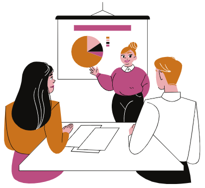

Volver
Visual, auditivo o kinestésico (VAK)

De acuerdo con Jaruffe y Pomares (2011) la Programación Neurolingüística parte de los fundamentos del constructivismo, en los que se define la realidad como una invención y no como un descubrimiento. Es un constructo psíquico basado en el hecho de que el ser humano no opera directamente sobre el mundo en que vive, sino que lo hace a través de representaciones, modelos, mapas, entre otros, a partir de los cuales genera y guía su conducta.
Estas representaciones, que también determinan cómo se percibirá el mundo y qué elecciones se percibirán como posibles en él, difieren necesariamente de la realidad a la cual representan; debido a que el ser humano al comunicar su representación del mundo tiene ciertas limitaciones, las cuales se derivan de diversas fuentes, tales como las condiciones neurológicas del individuo, la situación social en que vive y sus características personales (Jaruffe y Pomares, 2011).
Los sentidos como olfato, tacto, gusto, vista y oído nos dan diversa información de otras personas; por lo tanto, una incorrecta utilización de dichos lenguajes hace que la imagen que nos formamos sea imprecisa. La utilización de estos sentidos es diversa en todas las personas. Habrá personas que perciban mejor a través de su sentido de la vista, por lo que buscan situaciones donde este sentido tenga mayor ventaja que los demás.
Visual

Las personas visuales perciben mejor su entorno mediante el sentido de la vista, se caracterizan por hablar más rápido de lo normal, su tono de voz es alto, postura rígida, respiración superficial y rápida.
Aprende lo que ve, necesita una visión detallada y saber a dónde va. Le cuesta recordar lo que oye.
En cuanto al almacenamiento de la información, es rápido y en cualquier orden. Le gustan las descripciones y se queda con la mirada perdida imaginando la escena.
Auditivo
Las personas auditivas perciben mejor su entorno mediante el sentido del oído, se caracterizan por una postura distendida, posición de escucha telefónica, respiración bastante amplia, voz bien timbrada, ritmo mediano, palabras referidas a la audición (oye, escucha). Gustan de actividades relacionadas con la escucha como: la música, contar historias, interactuar con otras personas, etc.
Su forma de pensar es de manera lineal, una idea continúa a la otra. Pensamiento más lento y completo.
Como aprende lo que oye, se repite a sí mismo paso a paso todo el proceso Si se olvida de un paso, se pierde. No tiene una visión global.
De manera secuencial y por bloques enteros registra la información. Por lo general, se pierde si le preguntan por un elemento aislado o le cambian el orden de las preguntas.
Le gustan los diálogos, evita las descripciones largas y no se fija en las ilustraciones.
Kinestésico
Las personas son consideradas kinestésicas porque perciben el mundo a través de los sentidos del tacto, gusto y olfato. Se caracterizan por su postura muy distendida, movimientos que miman las palabras, respiración profunda y amplia, voz grave, ritmo lento con muchas pausas. Gustan de actividades físicas, así como del contacto con otras personas.
Además, confían en sus sentimientos, sensaciones e intuiciones y conocen más a través de lo que sienten que del hacer.
Aprende con lo que toca y lo que hace, por lo tanto, necesita estar involucrado personalmente en alguna actividad.
En cuanto a memoria, recuerda lo que hizo o la impresión general que eso le causó pero no los detalles, mediante la memoria muscular.
Le interesan las historias con acción y necesita moverse mientras lee. No es un gran lector.
Claves VAK - Visualizaciones
Considerando los sistemas representativos (VAK), al momento de realizar nuestras visualizaciones para comunicar de manera efectiva, podemos resumirlo de la siguiente forma:
Ir arriba